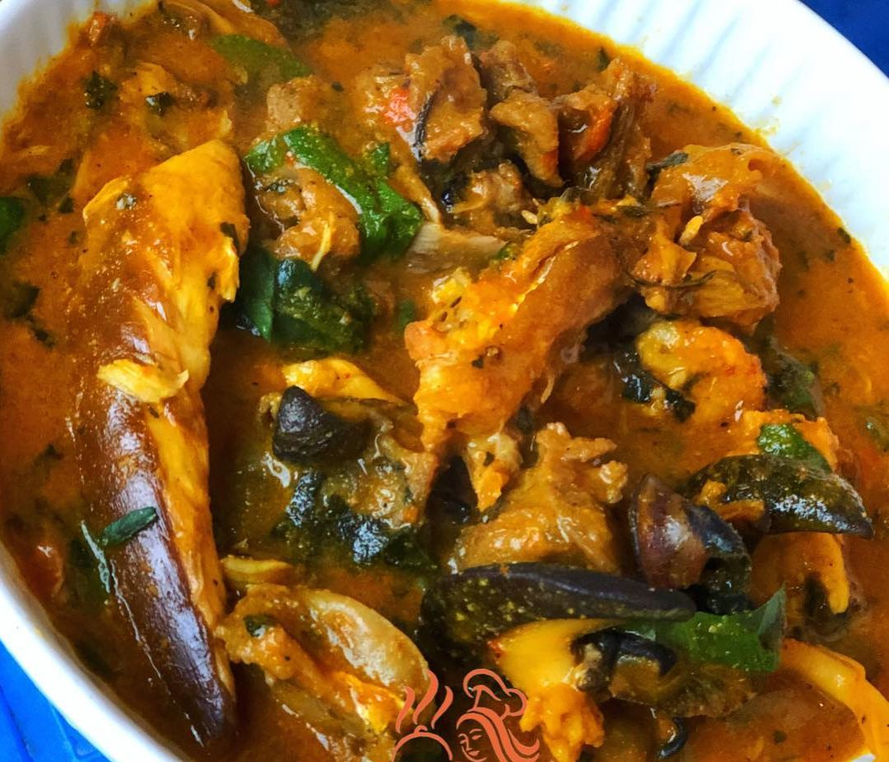

Ogbono Soup

A dish of ogbono soup with assorted meats
Made from powdered dried seeds of ogbono, vegetables, palm oil, seasonings and goat meats. It
is a common stapple in many parts of West Africa and among other Afro-centric communities
around the world
Best served with mousels of eba, starch or pounded yam
Ingredients
- Dried Ogbono seeds
- Vegetables
- Palm Oil
- Seasonings
- Goat Meats
- Ugwu Leafs
Recipe Instructions
- Add the meats to a clean pot and cook till soften
- Add some palm oil to the mix
- Make a mixture of dried pepper with the powdered ogbono
- Make this into a paste and add it to the pot
- Add additional pepper as desired
- Cook for a few minutes
- Add seasonings and salt to taste
- Add the chopped and washed vegetables
- Allow to simmer for a few minutes and serve hot